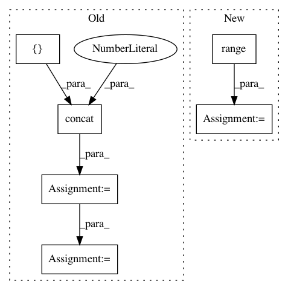

b9927f30cb9c92040c30d0fe8c735d8baea167b2,tensornets/layers.py,,gconvbn,#,59
Before Change
c = args[-1]
f = x.shape[-1].value // c
g = f // c
x = tf.reshape(x, tf.concat([tf.shape(x)[:-1],
tf.constant([g, c, c])], axis=0))
x = tf.reduce_sum(x, axis=-2)
x = reshape(x, tf.concat([tf.shape(x)[:-2],
tf.constant([f])], axis=0), name="gconv")
return batch_norm(x)
After Change
f = x.shape[-1].value // c
g = f // c
kernel = np.zeros((1, 1, f * c, f), np.float32)
for i in range(f):
start = (i // c) * c * c + i % c
end = start + c * c
kernel[:, :, start:end:c, i] = 1.
x = conv2d_primitive(x, tf.constant(kernel), strides=[1, 1, 1, 1],
padding="VALID", name="gconv")
return batch_norm(x)
In pattern: SUPERPATTERN
Frequency: 3
Non-data size: 6
Instances
Project Name: taehoonlee/tensornets
Commit Name: b9927f30cb9c92040c30d0fe8c735d8baea167b2
Time: 2019-03-13
Author: me@taehoonlee.com
File Name: tensornets/layers.py
Class Name:
Method Name: gconvbn
Project Name: tensorflow/agents
Commit Name: 982db1e3e4097b2fa2727bddf05307633dd6df83
Time: 2020-03-12
Author: no-reply@google.com
File Name: tf_agents/bandits/agents/utils.py
Class Name:
Method Name: build_laplacian_over_ordinal_integer_actions
Project Name: tensorflow/models
Commit Name: 5e854f25098ca40a4ac80197607bf883feaeb375
Time: 2018-02-13
Author: lzc@google.com
File Name: research/object_detection/utils/learning_schedules.py
Class Name:
Method Name: manual_stepping